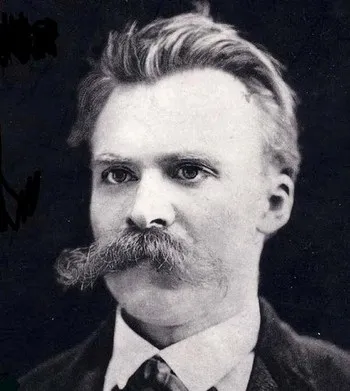

|  | |
| 본명 | Friedrich Wilhelm Nietzsche 프리드리히 빌헬름 니체 |
| 출생 | 1844년 10월 15일 독일 연방 작센 주 뢰켄 |
| 사망 | 1900년 8월 25일(향년 55세) 독일국 작센바이마르아이제나흐 바이마르 |
| 국적 | 프로이센 왕국 (1844~69) 무국적 (1869~1900) |
| 직업 | 문헌학자, 시인, 음악가, 철학자 |
개요
Gott ist tot. Gott bleibt tot. Und wir haben ihn getötet. Wie trosten wir uns, die Mörder aller Mörder?
신은 죽었다. 신은 죽어있다. 그리고 우리가 그를 죽여버렸다. 살해자 중의 살해자인 우리는 어떻게 스스로를 위로할 것인가?
『즐거운 학문』
나는 내 운명을 안다. 언젠가는 내 이름에 어떤 엄청난 것에 대한 회상이 접목될 것이다. 지상에 한 번도 나타난 적이 없었던 위기에 대한,
가장 심원한 양심들의 충돌에 대한, 이제까지 믿어져 왔고 요구되어 왔으며 신성시되었던 모든 것에 거부를 불러일으키는
결단에 대한 회상이. 나는 인간이 아니다. 나는 다이너마이트다.
『이 사람을 보라』
19세기에 활동했던 독일 철학자, 문헌학자, 시인, 음악가. 그가 주장한 주요 철학적 사상에는 신은 죽었다, 힘에의 의지, 위버멘쉬, 영원 회귀, 운명을 사랑하라 등이 있다.
특유의 급진적인 사상으로 대륙철학, 실존주의, 포스트모더니즘에 가장 많은 영향을 미쳤으며, 현대 대륙 철학의 근간을 마련했다. 마르크스, 프로이트, 비트겐슈타인, 하이데거와 더불어 현대 인문학 전반에 가장 큰 영향을 끼친 철학자이기도 하다. 실제로 저명한 사회학자 막스 베버는 이 시대 지식인들이 얼마나 정직한지를 확인하려면 그들이 마르크스와 니체의 이론적 기여를 어떻게 평가하는지를 보라고 주장하기도 했다. 쉽게 말해, 마르크스와 니체의 영향력을 인정하지 않는 학자는 진실되지 못하다는 말로, 니체가 당대에 끼친 지성사적 영향력을 높이 평가한 발언이었다
특유의 공격적 비판으로 인해 오인되기도 하지만, 어떤 철학자보다 넓은 사상의 스펙트럼을 가지고 있는 철학자이며 그의 저서는 보는 사람의 시각에 따라 극단적일 정도로 다양하게 해석되고 있다. 그러한 까닭 중 하나는 니체 특유의 서술 방식이다. 그의 저작은 대부분 압축적이고 강렬한 아포리즘으로 이루어지며 논리적이라기보다는 문학적이라는 인상을 강하게 남긴다. 하지만 실제 성격은 온화하고 유머를 좋아했으며 사교성이 있었다고 한다.
어린 시절

니체는 1844년 10월 15일 독일 연방 작센주 뢰켄에서, 루터교 목사였던 아버지 카를 루트비히 니체와 다른 지역의 목사의 딸이었던 어머니 프란치스카 욀러의 아들로 태어났다. 애국심이 강했던 아버지는 아들의 이름을 프로이센의 당대 왕인 프리드리히 빌헬름 4세의 이름을 따서 '프리드리히 빌헬름 니체'로 지었다. (그래서 니체는 자신의 이름을 좋아하지 않았다.) 2년 뒤에는 여동생 엘리자베스, 또 2년 뒤엔 남동생 요제프가 태어났다. 아버지는 신앙심이 깊었으나 설교 도중에 발작을 일으키는 등 신경질환에 시달렸고, 니체가 5살 되던 해에 뇌연화증(뇌졸중)으로 숨을 거두었다. 몇달 후 남동생 요제프도 돌연 사망했다. 그래서 니체는 이후 여자들만 있는 집(할머니, 2명의 고모, 어머니, 여동생, 하녀)에서 어린 시절을 보냈다. 니체 집안의 모든 여성들은 유일한 남자인 니체를 애지중지했지만, 두 번의 죽음으로 조숙해진 니체는 보통 아이들처럼 마음 편하게 어리광을 부린 적이 없었다.
아버지가 죽은 후, 니체의 가족은 나움부르크에 있는 할머니 집에 얹혀살았다. 그곳에서 니체는 6살이 되자마자 학교에 들어갔는데, 아버지가 돌아가셔서 돈이 없었기 때문에 가난한 집 아이들이 다니는 시립학교를 다닐 수밖에 없었다. 이후 평생동안 고통받을 고질적인 두통과 심각한 근시로 인해 학교에선 또래 아이들과 잘 어울리지 못했고, 친구들은 조숙하고 생각이 신중했던 니체를 '꼬마 목사'라고 놀렸다. 어린 니체에게 유일한 친구는 음악이었다. 피아노에 재능이 있었으며 작곡을 직접하기도 했다. 10살이 되던 해에 기독교 학교인 돔 김나지움으로 옮겨 4년간 공부했다. 그리고 여기에서의 좋은 성적을 바탕으로 14살에는 당시 독일 연방에서 가장 전통 깊은 학교인 슐포르타에 입학할 수 있었다. 슐포르타의 교육방식은 수도원과 군대를 합쳐놓은 것과 같이 엄격한 기숙사 학교였다. 니체는 처음에 향수병이 심했지만 곧 적응하였고 그리스어와 라틴어 수업을 특히 좋아해서 학년 말에는 거의 수석을 차지했다. 그러나 수학과 체육은 형편없었다.
대학 생활

슐포르타를 졸업하고 20살이 된 니체는 본 대학교에 입학했다. 어머니의 바램에 따라 신학 학부에 들어갔지만, 관심을 느낀 분야는 고전문헌학이었다. 본 대학교를 선택한 건 당시 이름난 고전문헌학자였던 프리드리히 리츨(F. W. Ritschl) 교수 때문이었다. 어쨌거나 니체는 여기서 공부에 집중하지 못했는데, 공부를 위해 가입한 동아리에서는 공부보다는 술마시고 노래했던 적이 더 많았다. 이 무렵 니체는 과학서적과 다비드 슈트라우스가 쓴 《예수의 생애》를 읽었고, 기독교에 상당히 의구심을 품기 시작했다. 그래서인지 그해 부활절 성찬식에도 참석하지 않았다. 부활절은 독실한 기독교인이라면 마땅히 참석해야 하는 행사였다. 따라서 성찬식에 가지 않겠다고 한 니체의 행동은 어머니와 여동생이 보았을 때, 절대 가볍게 넘길 수 없는 사건이었다.
니체는 본 대학교에서 보낸 첫 두 학기 동안 얻은 것이 별로 없었다. 마침 리츨 교수가 동료교수와 다투고 라이프치히 대학교로 자리를 옮기자, 니체도 따라 라이프치히 대학으로 넘어갔다. 라이프치히에서는 꽤 열심히 공부했다. 자신이 사는 건물 1층, 건물주가 운영하는 '론'이라는 이름의 헌책방에서 쇼펜하우어의 《의지와 표상으로서의 세계》를 우연히 발견한 것도 이때였다. 하지만 프로이센의 수상 비스마르크는 독일 연방을 해체시키고 프로이센을 중심으로 독일 제국을 건설하겠다며 전쟁을 일으켰고, 프로이센 군대가 니체의 가족이 살던 작센주까지 점령한 것도 이시기였다. 그래서 니체는 프로이센 군인으로 소집되어 나움부르크에 주둔한 야전포병대 기마부대의 사병으로 복무할 수밖에 없었다. 군복무는 니체에게 지옥과 같았지만, 불행인지 다행인지 니체는 지독한 근시로 인해 훈련도중 말과 부딪쳐서 가슴에 뼈가 보일 정도로 상처를 입었고, 병가 신청이 받아들여져 군 복무가 면제되었다.
때마침 리츨 교수는 병가로 휴식을 취하고 있는 니체에게 스위스에 위치한 바젤 대학교 문헌학 교수를 추천해주었다. 니체는 아직 학생 신분에 불과했고, 심지어 이때의 니체에게는 아무런 학위도 없었다! 그런데도 리츨 교수는 "내가 강단에서 학생들을 기르쳐 본 이래로 이토록 고전문헌학에 특출난 재능을 가진 학생을 본 적이 없다"며 탄복한 나머지, 아무 학위도 가지지 않은 일개 학생에게 바로 교수자리를 추천해줬던 것이었다. 리츨 교수는 이례적으로 학위 논문 심사를 거치지도 않고 라이프치히 대학을 통해 박사 학위를 받도록 니체에게 도움을 주었는데, 이로써 니체는 불과 25살의 나이에 바젤 대학교의 최연소 교수가 될 수 있었다. 그리고 바로 한 달 뒤, 바젤 대학교 고전문헌학 교수로서 수업을 시작했다. 바젤 대학교 문서에 따르면, 리츨 교수의 강한 추천과 니체의 문헌학에 대한 특출난 재능 때문에 이러한 이례적인 결단이 내려졌다고 한다.
아무튼 바젤 대학교는 니체가 다시 군대에 불려가기를 원치 않았기 때문에, 니체에게 프로이센 시민권을 포기하고 스위스 국적을 가졌으면 좋겠다고 제안했다. 그래서 니체는 프로이센 시민권을 버렸지만, 스위스 시민권을 취득하는 데 필요한 요건을 채우지 못해 결국 평생 무국적자로 살게 된다.
바그너와의 만남
니체가 교수직을 시작하며 스위스 바젤에 정착하던 무렵, 바그너는 루체른호수의 트리브쉔 저택에 살고 있었다. 관현악의 대가로 알려졌던 바그너는 이미 50대 중반에 유럽 전역에서 명성이 자자했다. 어릴 때부터 음악을 좋아했던 니체도 당시에 유명했던 바그너를 물론 알고 있었고, 종종 바그너의 곡을 직접 피아노로 연주하기도 했다. 한번은 바그너의 여동생이 바그너에게 리츨 교수를 소개시켜주었는데, 리츨 교수는 그 자리에서 바그너가 연주하는 곡이 니체가 평소에 쳤던 곡임을 단번에 알아차렸다. 리츨 교수는 바그너에게 니체에 대해 얘기했는데 이것이 인연이 되어 니체도 그 다음 모임에 초대받아, 바그너와 함께 얘기를 나눌 수 있었다. 둘은 모두 쇼펜하우어의 철학에 심취해 있었기 때문에 얘기가 통했다. 사실 바그너는 기분 좋게 '교수'라는 호칭을 자주 듣기는 했지만 진짜 교수와는 거리가 멀었다. 비록 그가 만든 오페라 「니벨룽의 반지」가 '고대 그리스 4부작의 재탄생'이라는 평가를 받고 있었지만, 정작 본인은 라틴어와 그리스어를 읽지 못해서 고전을 번역본으로만 읽을 수 있었던 것이다. 그런 그에게 니체의 지적 능력은 많은 도움이 되었다. 니체에게도 바그너라는 거장은 철학적 영감을 불러일으키는 자극제였다.
이후 바그너는 자신의 집에 니체의 방을 따로 마련해줄 정도로 니체를 극진히 아꼈다. 니체도 거의 매일같이 바그너 집에 놀러가 거기서 거의 살다시피 했다. 바그너와 니체는 31년이나 나이차이가 났는데, 아버지 없이 자랐던 니체는 바그너에게 거의 아버지와 같은 정을 느꼈다. 바그너도 니체를 아들처럼 대했다. 니체는 바그너의 크리스마스 가족행사 때에도 초대받아 같이 크리스마스를 보내고 선물을 주고받기도 할 정도로 가까워졌다. 무엇보다도 그러는 사이에 니체와 바그너가 나눈 수많은 철학적 대화들은, 니체에게는 철학적 영감을, 바그너에게는 음악적 영감을 고취시켰다. 니체는 바젤 대학교의 정교수로 임명된 1870년 "디오니소스적 세계관"을 구상하기 시작했고, 프랑스-프로이센 전쟁이 발발하여 위생병으로 지원했다가 디프테리아와 이질에 걸려 다시 바젤로 돌아온 이후로 이를 다시 발전시켜 1872년 자신의 첫 저서인 『비극의 탄생』을 완성시켰다. 니체는 이 책을 바그너에게 헌정했다.
이 책에서 니체는 예술 본연의 정신을 살리고 있는 작곡가로 바그너를 지목한다. 간단히 설명하자면, 조각이나 그림처럼 눈으로 확인할 수 있고 논리적으로 설명할 수 있는 것은 아폴론적인 것이고, 음악과 비극처럼 눈으로 확인할 수 없고 논리적으로 설명할 수 없지만 사람의 감정을 고조시키고 정신을 몰입시켜 자기를 완전히 잊게 만드는 것은 디오니소스적인 것인데, 그리스 비극은 아폴론적인 '설명'과 디오니소스적인 '노래'를 합쳐서 '합창'이라는 형식을 탄생시킴으로써 그리스에 문화적 황금기를 가져왔다는 것이다. 그러나 소크라테스가 '미덕은 변증법적인 논리를 가져야 된다'면서 아폴론적인 것만을 강력히 주장한 뒤로부터, 그리스의 문학적 세계관에서 디오니소스적 몰입과 광기가 사라져 버렸고, 그리스 비극은 몰락의 길을 걷게 되었다는 것이 니체의 주장이다. 그런 맥락에서 바그너는 언어와 음악이 합쳐진 오페라를 부흥시킴으로써, 디오니소스적인 것과 아폴론적인 것이 재결합하는 새로운 비극적 예술의 형태를 제시한 사람이라는 것이다.
당연하게도 바그너와 바그너를 추종하는 사람들은 『비극의 탄생』을 극찬했다. 하지만 쇼펜하우어의 개념을 그리스 고전에 대입시킨 니체의 전략 ㅡ '표상'을 아폴론적인 것, '의지'를 디오니소스적인 것으로 대입시키는 니체의 해석은, 완고한 고전문헌학자였던 리츨 교수가 학문적으로 도저히 받아들일 수 없는 것이었다. 더군다나 니체의 대학 후배면서 같은 고전학 교수이던 빌라모비츠 묄렌도르프가, 바그너식 '미래의 음악'을 비꼬아 '미래의 문헌학!'이라는 논문을 발표해서 니체를 강력하게 비판했다. 문헌학은 문헌학적 방법으로 과거를 엄격하게 찾아가는 것이지, 형이상학적 철학을 이용해 과거를 자의적으로 해석해서는 안 된다는 것이다. 그렇기에 『비극의 탄생』은 문헌학의 나쁜 사례라는 것이 묄렌도르프의 주장이었는데, 이는 어느 정도 일리있는 비판이었다. 사실 니체는 쇼펜하우어의 철학에 점차 깊숙히 빠지면서 고루한 문헌학에 흥미를 잃고 있었고, 대학이사회 회장에게 마침 공석이던 철학과 학과장 자리로 옮기고 싶다고 제안을 하기도 했다. 그래서 어찌보면 니체가 기존의 문헌학적 방법에서 벗어나 철학적 해석을 시도했던 것은 정해진 수순이었다고 할 수 있다. 하지만, 이를 계기로 고전문헌학자로서의 니체의 명성은 말그대로 박살나 버렸다. 다음 학기 니체의 수업을 등록한 학생은 단 두 명뿐이었고, 심지어 두 사람 모두 문헌학을 전공하는 학생이 아니었다.
한편, 바그너는 루트비히 2세의 후원을 바탕으로 바이로이트에 그가 만든 오페라를 제대로 공연할 수 있는 거대한 극장을 짓기로 결심하고, 스위스를 떠나 독일(프로이센) 바이로이트에 정착했다. 스위스 바젤에 홀로 남은 니체는 공허감에 빠졌다. 게다가 건강이 점점 나빠지면서 두통과 안통이 심해졌는데, 특히 빛에 민감해서 니체는 모든 창문에 두꺼운 커튼을 치고는 거의 온종일 어두컴컴한 방 안에서만 생활할 수밖에 없었다. 어쩌다가 한 번씩 외출할 때는 두꺼운 초록 안경으로 눈을 보호하고, 챙이 긴 초록 모자로 얼굴을 완전히 가렸다. 결국 시력이 악화되면서 글을 읽거나 쓰는 일은 아예 시도조차 할 수 없는 지경에 이르렀다. 이것은 분명 최악의 불행이었지만, 니체는 한편으로는 그 병을 "최고의 축복"으로 여겼다. 그 병은, 니체를 '책읽기'에서 벗어나 스스로 생각하게끔 만들었고, 그것으로부터 시작하여 니체는 자신만의 생각을 말할 수 있게 되었기 때문이었다.
바그너는 바이로이트에 있으면서도 꾸준히 니체를 불렀다. 하지만 자신의 생각을 가지게 된 니체는 몇 가지 문제를 두고 견해 차이를 보이기 시작했고, 서서히 바그너의 예술에 회의를 품게 되었다. 바그너의 작품이 민족주의적이면서 기독교적 성격을 강하게 띄게 된 것이 그 원인이었다. 물론 그렇다고 하더라도 그 문제로 사이가 틀어질 정도는 아니었다. 니체가 바그너와 틀어지게 된 결정적인 계기는 바그너의 편지에 있었다. 바그너는 니체의 건강 문제를 걱정하며 니체의 의사에게 경솔한 편지를 보냈다. 니체가 자위를 너무 많이 해서 몸이 좋지 않은 것 같다고 말이다. 자위행위가 심각한 안구질환을 일으킬 수 있다는 것이 당시 사람들의 믿음이었기 때문에, 바그너도 충분히 그렇게 생각할 수 있었을 것이다. 문제는 그 편지 내용이 흘러나와 사람들에게 가십거리가 되었고 그것을 니체가 알게 되었다는 데 있었다. 하지만 그 사실을 안지 얼마 지나지 않아 바그너가 죽음으로써, 그 문제는 니체의 마음 속에 해결되지 않은 채로 남게 된다. 이로써 니체는 정신적으로도 바그너와 완전한 결별을 하게 되었다. 물론 그것은 쇼펜하우어와의 결별이기도 했다.
폭발하는 정신
그 시작은 『인간적인 너무나 인간적인』이라는 책에서 부터였다. 아직 바그너가 살아있을 때, 니체는 요양차 들린 이탈리아에서 '도덕은 초월적 기원을 가지지 않으며, 인류는 오랜 시간 동안 세대와 세대를 거쳐 전해진 도덕적 본성을 발전시켜 왔다'고 주장하는 진화윤리학자 파울 레 박사를 만났다. 당시 니체는 바그너에 대해 문제의식을 가지고 있었고, 파울 레의 관점을 통해 바그너와 쇼펜하우어를 극복하고자 했다. 그렇게 나온 책이 『인간적인 너무나 인간적인』이라는 책이다. 니체는 건강 때문에 어쩔 수 없이 짧게 쓸 수밖에 없었는데, 그 덕분에 단점이 장점으로 승화되었다. 강렬한 잠언식 글쓰기가 한층 더 심도 있는 질문으로 독자들을 자극할 수 있음을 니체는 깨달았다. 이로써 니체는 비로소 독창적인 문장가이자 진정한 사상가로 탄생할 수 있었지만, 이는 『비극의 탄생』을 통해 얻은 몇 안 되는 충실한 지지자들마저도 버리는 짓이기도 했다. 완전히 혼자가 된 그는 결국 1879년, 건강상의 이유를 대고 교수직마저 사임했다.
니체는 책과 그림 몇 점을 제외하고 가지고 있던 모든 물품을 처분했다. 그리고는 스위스와 이탈리아를 번갈아 돌아다니면서 2년간 방랑 생활을 이어갔다. (이때 『아침놀』을 집필함.) 그러던 1881년 7월의 어느 날, 니체는 스위스의 실스마리아에서 한 번도 경험해보지 못한 새로운 기분을 느꼈다. 병은 더욱 악화되었고 그로인한 고통은 비록 절망적이었지만, 고통의 깊이가 깊을수록 생각도 깊어져서 그전까지 한 번도 경험해보지 못한 생각들이 떠올랐다. 근처 실바플라나 호숫가에서는 그가 나중에 '차라투스트라 바위'라고 부른 피라미드 모양의 거대한 바위를 바라보며 처음으로 '영원 회귀 사상'을 생각해냈다. 이를 바탕으로 1882년에는 『즐거운 학문』을, 1883년에는 『차라투스트라는 이렇게 말했다』의 1부를 완성했다. 1부 원고를 출판사에 보낸 뒤, 니체는 바그너가 죽었다는 소식을 들었다. 니체는 진실을 약간 왜곡해, 바그너가 죽은 그 신성한 시각에 책의 마지막 부분이 완성되었다고 사람들에게 말했다. 니체에 따르면, 아버지인 바그너가 죽고, 아들인 차라투스트라가 태어난 것이다!
니체는 무아지경의 상태로 영감과 계시를 받아 열흘 만에 이 책을 썼다고 한다. 원고 겉면에는 '다섯 번째 복음서'라고 썼다. 연이어 2부, 3부를 집필했지만, 출판업자는 니체의 책이 '다섯 번째 복음서'라고 불릴 정도의 책이 아니라고 생각했고 인쇄를 계속해서 미뤘다. 겨우 출판한 책마저도 거의 팔리지 않았다. 심저어 4부는 소규모로 해서 자비로 출간했다.
니체의 건강은 급격히 나빠졌다. 그는 눈 때문에 몹시 고통스러워했고, 며칠씩 이어지는 구토와 설사로 괴로워했다. 시야는 늘 흐릿했고, 밝은 빛은 항상 찌르는 듯한 통증을 일으켰다. 이제 니체 스스로 판단하기로 자신은 거의 8분의 7 정도의 맹인이 되었다. 하지만 더 괴로운 것이 있었다. 『차라투스트라는 이렇게 말했다』가 제대로 된 인정을 받지 못한다는 것이었다. 니체는 자신이 이 책의 핵심사상을 성경 패러디로 감추거나 영웅의 서사적 전설로 포장을 했기 때문에 사람들이 이해하지 못한다고 생각했다. 그래서 『차라투스트라는 이렇게 말했다』의 생각을 더욱 명확히 전달하기 위해 『선악의 저편』을 썼다. 그 다음 책인 『도덕의 계보』는 『선악의 저편』의 내용을 더욱 명확히 전달하기 위해 썼다. 그제서야 비트만, 브라네스 등의 비평가들에게서 열광적인 반응이 돌아왔다. 특히, 브라네스가 코펜하겐에서 니체의 저서를 주제로 강연을 한 이후에, 니체는 마침내 대중의 찬사를 받게 되었다. 니체는 문득 자신에게 인류를 위해 받아들여야만 하는 운명같은 막중한 책임감이 있음을 느꼈다. 그것은 선택의 문제가 아니었다. 인류에게는 지금까지 숭배했던 모든 가치들의 전도가 필요하다! 이제 체계의 일부가 아니라 체계 전체를 철저히 무너뜨릴 계획을 세워야 한다. 니체는 그 책의 제목을 미리 『힘에의 의지 : 모든 가치의 전도에 대한 시도』라고 붙였다.
그 전의 예비적인 작업으로 1888년 9월에 『우상의 황혼』 집필을 끝냈다. 그리고 이탈리아 토리노로 건너가서 드디어 『힘에의 의지』를 쓰려고 몇 달 동안 남긴 어마어마한 양의 메모를 정리하기 시작했다. 하지만 새 책을 쓰기 시작한 그날, 그는 갑자기 마음을 바꾸어 그 동안의 기획들을 "안티크리스트, 자유정신, 부도덕자, 디오니소스" 이렇게 4권의 책으로 구성하기로 결정한다. 그리고 우선 『안티크리스트』를 먼저 썼다. 근데 책을 쓰면서, 자신에 관한 모든 이야기를 풀어내고 싶어졌다. 그렇게 나온 자서전이 『이 사람을 보라』다. 그러면서 『니체 대 바그너』를 써서 또 한번 바그너에 대한 공격을 감행했다. 이 모든 작업이 불과 석 달 안에 이뤄졌다. 게다가 니체는 친구 오버베크에게 "위대한 재평가의 책 네 권이 곧 나올 것"이며, "내가 인류의 역사를 두 동강 내는 것이 아닌가 하는 두려운 마음이 든다"고 말했다. 하지만 니체의 정신은 뇌질환으로 인해 점차 붕괴되고 있었고 그 계획은 영원히 실행되지 못했다. 적어도 그 해 12월 크리스마스 무렵에는 광증에 진입한 것으로 보인다. 니체가 지인들에게 보낸 크리스마스 안부 편지에는 정신 이상 증세로 판단될 수 있는 기괴한 내용들이 쓰여져 있었다. 크에게 "위대한 재평가의 책 네 권이 곧 나올 것"이며, "내가 인류의 역사를 두 동강 내는 것이 아닌가 하는 두려운 마음이 든다"고 말했다. 하지만 니체의 정신은 뇌질환으로 인해 점차 붕괴되고 있었고 그 계획은 영원히 실행되지 못했다. 적어도 그 해 12월 크리스마스 무렵에는 광증에 진입한 것으로 보인다. 니체가 지인들에게 보낸 크리스마스 안부 편지에는 정신 이상 증세로 판단될 수 있는 기괴한 내용들이 쓰여져 있었다.
말년과 왜곡

1889년 1월 3일, 그날 아침 정확히 무슨 일이 일어났는지는 확실치 않다. 사람들에 따르면, 니체는 보통 때처럼 카를로 알베르토 광장에 있는 하숙집을 찾아나서는 길이었다고 한다. 그날도 카를로 알베르토 광장에는 승객을 기다리는 몇몇 마차와 택시 사이에서 주인의 명령을 따르느라 속절없이 괴롭힘을 당하는 불쌍한 말들이 힘없이 축 늘어진 채로 서 있었다. 니체는 거기서 한 마부가 말에게 심하게 채찍질하는 모습을 보고는 큰 충격을 받았다. 그러고는 몸을 던지다시피 마부를 가로막았고, 말의 목을 부둥켜안고는 목 놓아 울다가 정신을 잃었다고 전해진다. 혹자는 이 유명한 일화가 사실이 아니라고 주장한다.
어찌되었든 하숙집 주인은 니체의 광증을 확인한 뒤 니체의 친구 오버베크에게 연락했고, 오버베크는 정확한 진단을 위하여 니체를 스위스로 데려왔다. 지금의 연구결과에 의하면 니체는 '뇌연화증'으로 인해 광증이 나타난 것이지만, 당시 니체를 진단했던 의사는 '매독으로 인한 진행성 마비'로 잘못 판단했다. 니체는 곧바로 예나에 있는 정신병원으로 옮겨졌다. 1년 뒤에는 판단력과 언어 능력을 거의 상실한 채로 병원에서 나와 어머니가 있는 나움부르크의 어린 시절 집으로 돌아왔다. 그렇게 니체는 잊혀지는 듯 했으나...
1893년 유럽을 휩쓴 아방가르드의 열기로 니체의 책이 엄청난 주목을 받게 된다. 니체를 소개하는 강연과 저술은 큰 흥행을 이뤘으며, 이를 통해 니체의 이름이 순식간에 유럽 전역으로 퍼졌다. 그의 영향을 받아 화가 에드바르트 뭉크는 '절규'라는 작품을 탄생시켰다. 1896년에는 리하르트 슈트라우스가 『차라투스트라는 이렇게 말했다』를 교향시로 만들어 공연하기까지 했다. 하지만 이때의 니체는 광증에 완전히 지배당하고 있었기 때문에 자신의 유명세를 알지 못했다. 약삭빠른 여동생 엘리자베스는 오빠의 책에 쏟아지는 국제적 관심을 이용하여 자신의 이익을 챙기기 위한 계획을 세웠다. 집에다가 '니체 문서 보관소'를 짓는 것이었다. 2층에는 광증에 빠진 오빠 니체를 둔 채로, 1층에서는 토요일마다 사교파티가 벌어졌다. 니체의 추종자들은 그들의 우상이 바로 위층에 누워 있다는 사실을 의식하고 흥분했다. 특별 손님은 2층으로 올라가 먼발치에서 그를 볼 수 있었다. 인지 능력을 완전히 상실한 니체는 그런 식으로 엘리자베스의 명성을 높여주는데 이용당했다. 어머니가 죽고 난 뒤로는, 문서 보관소를 바이마르로 옮겼다. 그러던 1900년 8월 25일, 니체는 그렇게 세상을 떠났다. 장례식은 아이러니하게도 기독교식으로 치러졌다.
반유대주의자였던 엘리자베스는 니체가 죽은 지 1년 만인 1901년에, 니체의 유고를 마음대로 편집해서 『힘에의 의지』를 출간했다. 『힘에의 의지』 확장판을 내고 난 1908년에는 노벨 문학상 후보에 올랐고, 이후로도 세 번이나 니체에 대한 글로 수상 후보에 이름을 올렸다. 예나대학교는 그녀에게 명예박사 학위를 수여했다. 1933년에는 문서 보관소에서 히틀러를 맞이했고, 이때 엘리자베스는 니체의 지팡이를 히틀러에게 선물하는 영광(?)을 얻기도 했다. 니체의 글은 문서 보관소를 들락거리는 나치당원들에 의해 철저히 왜곡되었고, 히틀러는 자신의 이미지 정치에 니체의 '힘에의 의지'를 적극 이용하였다. 그러는 동안에 어느덧 90살를 앞둔 엘리자베스는 1935년에 고통 없이 평화로운 죽음을 맞이했다. 그녀의 장례식에 히틀러가 참석해서 화환을 내려놓았다.
현재 니체의 무덤은 라이프치히에서 남서쪽으로 약 21km 떨어진 작은 마을, '뢰켄'에 있다. 니체 사망 100주년을 기념하여 무덤을 둘러싸고, '니체와 팔짱을 끼고 있는 어머니', '발가벗은 니체 두 명이 본인의 장례식에 참석하는 모습'(니체는 이 장면을 자신의 꿈에서 보았다고 친구에게 말했다.)을 표현한 조각상이 세워져 있다.